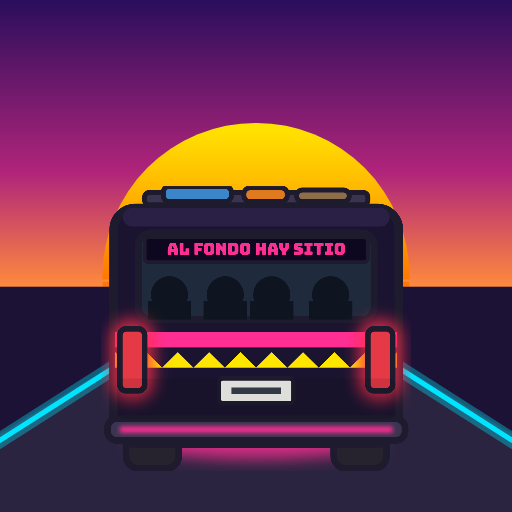

Combi Rush Español ↓Privacy Policy
Last updated: October 7, 2026
Combi Rush is a racing game published by Carlos Castillo (touchdata.pe). This policy explains what information the game uses. The short version: you can play without giving us anything. If you join the online ranking, we only store a driver name you choose and your game scores.
Playing offline
Your best scores, unlocked routes and combis, and settings (sound, vibration) are stored only on your device. We never receive them unless you join the ranking.
The online ranking (optional)
If you choose a driver name to join the ranking, our server stores:
- the driver name you pick, and a random player ID created by the app;
- a secret token that identifies your device to the server (we store only a one-way hash of it);
- for each run you submit: the route, a road number (seed), score, distance, passengers, stunt points, run length, and the date;
- challenges you create (a short code, route, road number and score);
- reports you send about offensive names (which player you reported). If you report without a driver name, we store a one-way hash of your IP address only to stop duplicate reports.
We do not collect your real name, email, phone number, contacts, photos, location, advertising ID or any device identifiers. There are no ads, no analytics and no tracking across apps or websites.
Your driver name and scores are public: anyone using the app or opening a challenge link can see them.
Why we use it
Only to run the rankings and challenges, to check scores for cheating, and to moderate offensive names.
Where it is stored
The ranking runs on Cloudflare (Workers and D1 database), which processes requests on our behalf. Cloudflare may process your IP address briefly to deliver and protect the service; we do not store IP addresses.
Sharing
We do not sell or share your information with anyone. When you share a challenge, you choose where to send it (for example WhatsApp); that service's own privacy policy applies.
Keeping and deleting your data
We keep ranking data until you delete it. In the app, go to Settings → Delete my account: your driver name, scores, challenges and reports are deleted from our server immediately. You can also email us to ask for deletion. Uninstalling the app removes the data stored on your device.
Children
Combi Rush is suitable for all ages but is not directed at children under 13. We don't knowingly collect personal information from children; the only thing a player can enter is a driver name, which must follow our naming rules. If you believe a child has entered personal information as a driver name, contact us and we will delete it.
Changes
If this policy changes, the new version will be posted here with a new date.
Contact
Política de privacidad (español)
Puedes jugar sin darnos ningún dato. Tus récords, rutas y combis desbloqueadas y ajustes se guardan solo en tu dispositivo.
Si eliges un nombre de chofer para entrar al ranking, nuestro servidor guarda: ese nombre, un ID aleatorio de jugador, un token secreto (solo guardamos su hash), tus partidas (ruta, número de pista, puntaje, distancia, pasajeros, puntos de acrobacias, duración y fecha), los retos que creas y los reportes que envías. Si reportas sin nombre de chofer, guardamos solo un hash de tu IP para evitar reportes duplicados.
No recopilamos tu nombre real, correo, teléfono, contactos, fotos, ubicación ni identificadores publicitarios. No hay anuncios, analítica ni rastreo. Tu nombre de chofer y puntajes son públicos.
El ranking funciona en Cloudflare (Workers y D1). No vendemos ni compartimos tus datos.
Para borrar todo: Ajustes → Eliminar mi cuenta (se borra al instante) o escríbenos a icochea1@gmail.com.